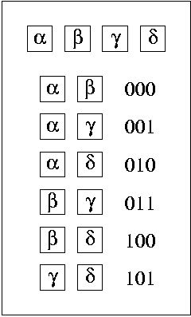

Home Page
F.A.Qs
Statistical Charts
Past Contests
Scheduled Contests
Award Contest
| Online Judge | Problem Set | Authors | Online Contests | User | ||||||
|---|---|---|---|---|---|---|---|---|---|---|
| Web Board Home Page F.A.Qs Statistical Charts | Current Contest Past Contests Scheduled Contests Award Contest | |||||||||
|
Language: California Jones and the Gate to Freedom
Description California Jones (the sister of famous Indiana Jones) once again faced a seemingly intractable problem. Her only hope was in you. She knew you were a computer scientist and you might have a clue.
Jones calls you on the video-phone and tells you the facts: she walked into a trap and now stands in front of a huge gate. On the left side strange signs can be seen while n stones lie on the right side. In front of the gate there are exactly n/2 holes. Says Jones, "I suppose I have to take exactly half of the stones from the right side and put them into the holes." Ancient writings confirm her conjecture. According to the writings it does not matter which hole a stone is placed into. It is only important that the right stones are chosen. Nearby, Jones found a stone board, too, but was unable to interpret. It made sense to you though. It was a hint on how to sort the various possibilities of chosing n/2 stones. But you couldn't yet figure out about the zeros and the ones. So you asked Jones who replied that "the same symbols I saw on the left side of the gate - only they were somewhat longer sequences. But I haven't met such a primitive civilization yet." Now everything was clear to you: the symbols were the representation of a binary number - and it indicated which stones to choose. Simply ingenious! Jones was enthusiastic about you. But it was impossible for Jones to calculate for a given binary number the corresponding stones. So she instructed you to write a program to solve the task and help her through the gate to freedom. Five hours later, she would call back. Take a thorough look at the figure to the left depicting the stone board, as well as the sample input and output, to figure out how to solve Jones' problem. Input The input contains several testcases. Each starts with the number of stones n. Input is terminated by n=0. Otherwise, n is even and 2<=n<=32. The next n integers identify the stones. A test case is further subdivided into k (sub-) test cases, k being the next number in the input file. Then follow k times a bit string b (encoding a non-negative integer) and n/2 distinct integers identifying the set of chosen stones. No invalid stones will be chosen and the length of b will not exceed 30. Output For each (sub-) test case generate a line containing TRUE, if the chosen stones may be laid into the holes, and FALSE otherwise. Sample Input 4 12 50 74 34 1 00 50 12 8 45 23 86 43 90 76 12 74 2 111001 86 43 90 74 010001 45 86 43 90 4 12 50 74 34 2 101 34 74 110 34 74 0 Sample Output TRUE TRUE FALSE TRUE FALSE Source |
[Submit] [Go Back] [Status] [Discuss]
All Rights Reserved 2003-2013 Ying Fuchen,Xu Pengcheng,Xie Di
Any problem, Please Contact Administrator